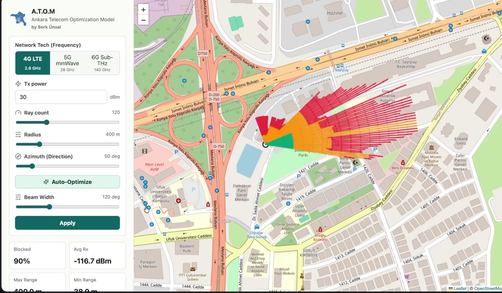
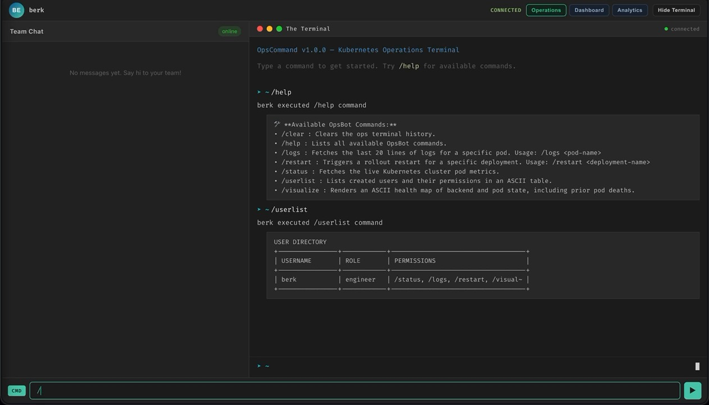

Cloud and Platform
Hands-on with Kubernetes, OpenStack, Docker, and AWS EC2 to design and operate resilient systems.
Cloud/backend portfolio
Platform-minded backend engineer building systems you can inspect.
I turn cloud infrastructure, APIs, and operational tooling into working proof: Kubernetes workflows, RF network simulation, automated delivery, and measurable backend performance.

A.T.O.M / urban RF coverage
OpsCommand / cluster operations
Project proof
OpsCommand and A.T.O.M lead the story: real interfaces, inspectable documentation, and backend/platform engineering depth.
Engineering record
Capability map
Swipe or drag to explore skills. The carousel auto-scrolls and can be controlled with arrow keys.
Hands-on with Kubernetes, OpenStack, Docker, and AWS EC2 to design and operate resilient systems.
Building RESTful APIs with Python, improving latency with Redis, and maintaining reliable SQL-backed services.
Automating releases with GitHub Actions and standardizing infrastructure workflows across Dev, Test, and Production.
Verification
Click a certificate to preview the PDF.
Contact
You can review my repositories and connect with me through the social links below.
Request my CV
Share a few details below and I will send it to your email.